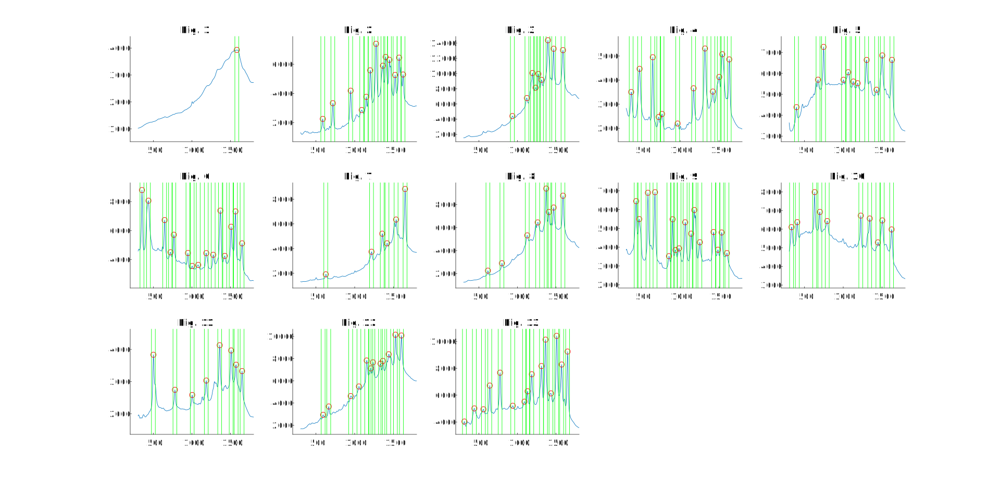

findpeaks 用法一例
题目
给出13个DNA频谱的数据, 分割出这些频谱的特征
数据 SpecData.mat 包含如下变量
Spcetra: 13行328列矩阵, 每一行代表一个DNA频谱xAxis: 328维向量, 表示采集数据的波长位置
主要命令用法简介
findpeaks
用途
寻找峰值
本例中涉及的用法
[pks,locs] = findpeaks(data): 对给定数据, 寻找峰值pks: 所有满足条件的峰值loc: 其对应的x坐标
findpeaks(data, name, value): 更改指定属性MinPeakProminence: 最小峰 Prominence, 大致可以理解为最小峰面积, 具体参见 ProminenceMinPeakDistance: 最小峰间距
代码与结果
Show code
1 | % Find peaks on given data |
